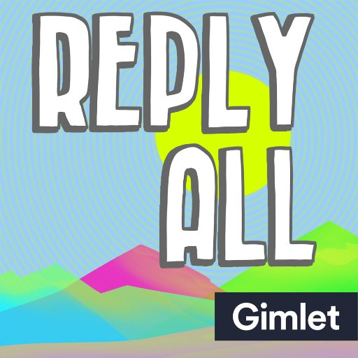
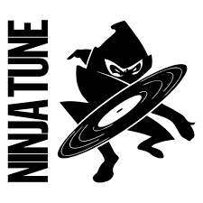

|  |
Reply All PodcastA show featuring stories about how people shape the internet, and how the internet shapes people. |
The Guilty Feminist PodcastA podcast to discuss 21st century feminism, whilst confessing the insecurities, hypocrisies and fears that undermine our lofty principles. |
|
|  |
Ninja Tune PodcastThe official Ninja Tune Podcast featuring exclusive interviews and music from the artists of Ninja Tune & guests from beyond. |